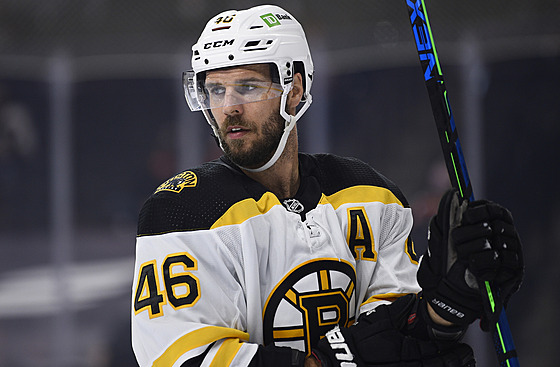
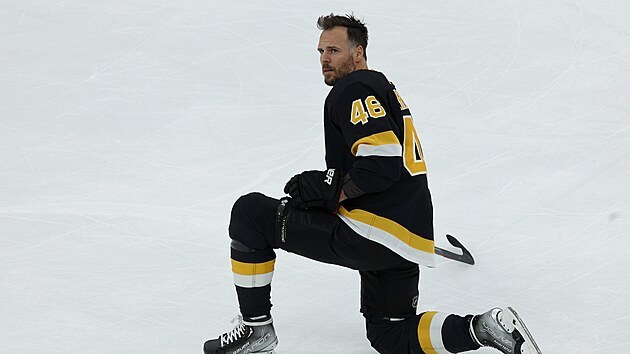

1. Prosince 18:40, aktualizováno 19:53, Autor: Jakub Jezbera
Lákala ho myšlenka, že by si před závěrečným loučením ještě zahrál na domácím světovém šampionátu. Hokejista David Krejčí si vzal čas na přemýšlení. Zdálo se, že si odpočine a do pár měsíců naskočí znovu do hry. Během pátečního večera ale jeho zastupující agentura CMG Hockey přišla s nečekanou zprávou. Sedmatřicetiletý útočník se ze zdravotních důvodů rozhodl ukončit kariéru už na startu prosince.
„David k rozhodnutí došel po konzultaci s lékařem. Zranění v dolní polovině těla ho limitují natolik, že se nemůže ani dostat do pořádného tréninku a zátěže,“ stojí v prohlášení agentury.
Zkušený centr v této sezoně nikde nehrál. Už koncem června hlásil, že si vezme čas na přemýšlení: „Dávám tomu týden, měsíc, pár měsíců... Jestli mi to potrvá do Vánoc se rozhodnout, tak ať, ale budu se udržovat, abych se mohl vrátit poměrně rychle.“
Jenže poslední podmínku zjevně nešlo kvůli zranění splnit. A tak definitivní verdikt padl nyní.
Třebaže Krejčího ohromně motivovala vidina účasti na domácím šampionátu: „Na druhou stranu převažují jiné věci, zranění, zdraví,“ připouštěl už tehdy.
„Když se rozhodnu, že budu pokračovat, tak hlavní důvod by byl poprat se o nominaci na šampionát v Praze. A tím by kariéra definitivně skončila, to je na sto procent,prohlašoval v srpnu.
Zdroj: https://www.idnes.cz/hokej/reprezentace/david-krejci-konec-kariery.A231201_183812_reprezentace_rou